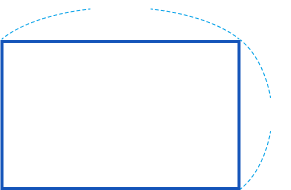

직사각형에서 마주 보는 두 변의 길이는 어떤 특징이 있나요?

8 ㎝
5 ㎝

가로
세로
가로의 길이를 가로,
세로의 길이를 세로라고
부르기도 해.
마주 보는 두 변의 길이가 같습니다.
직사각형의 둘레를 구하는 방법을 이야기해 보세요.
8 ㎝
5 ㎝
가로와 세로를 더한 후 이를 2배 하여 구합니다.
‘가로’와 ‘세로’를 사용하여 직사각형의 둘레를 구하는 방법을 식으로 나타내어 보세요.
(직사각형의 둘레)=
×
2
+
×
2
=
(
+
)
×
2
식을 이용하여 직사각형의 둘레는 몇 ㎝인지 구해 보세요.
식:
답: